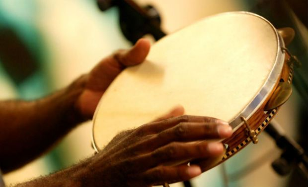
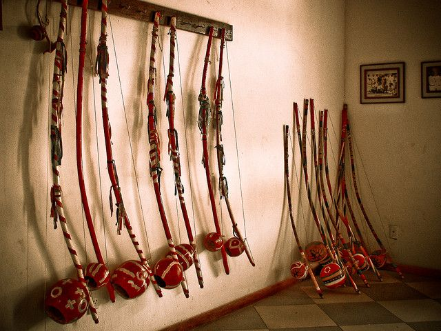
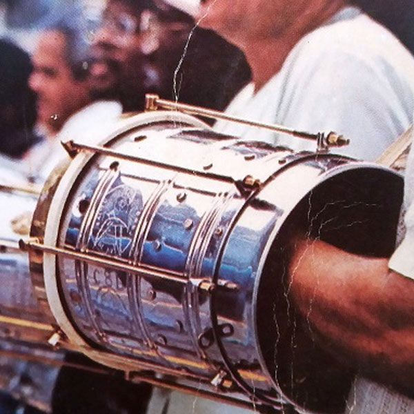
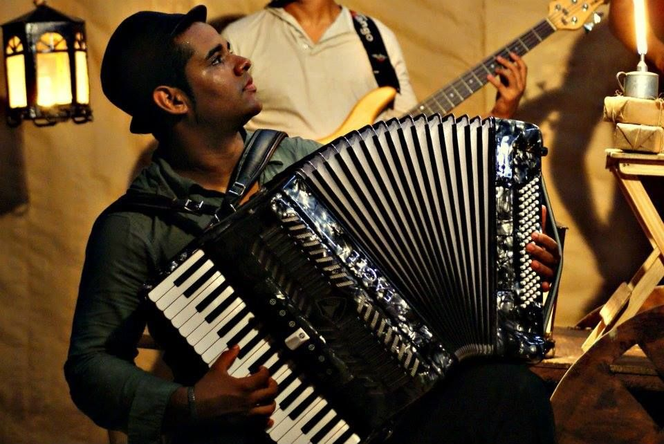
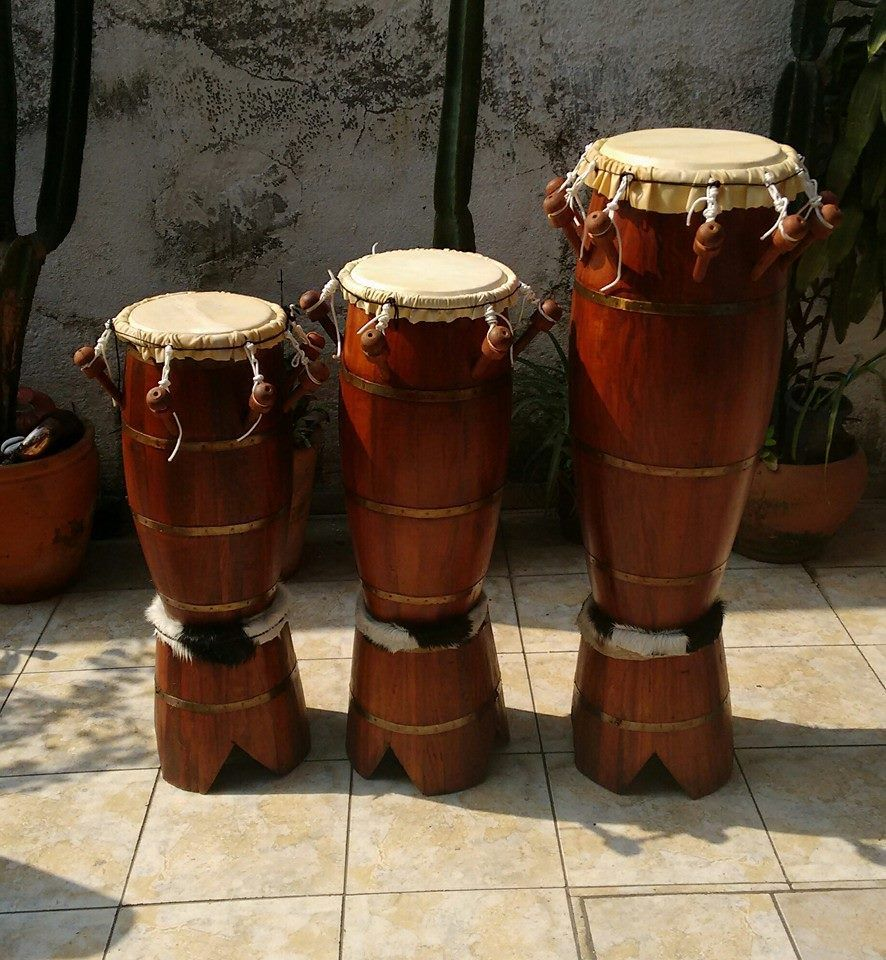
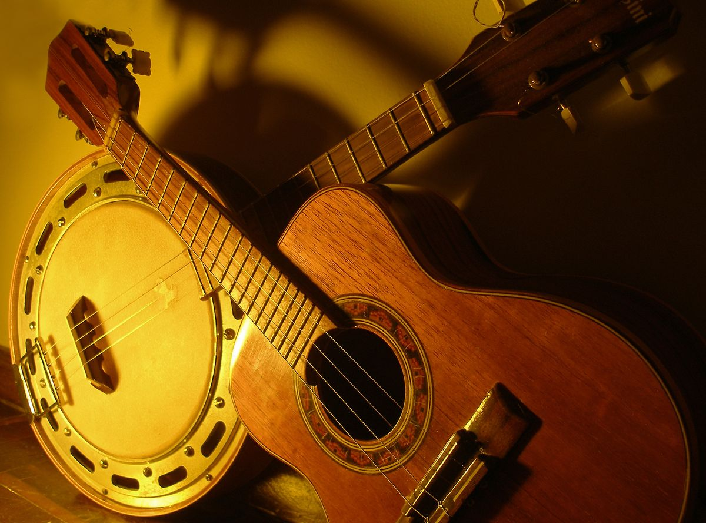

Pandeiro
O pandeiro é um dos instrumentos mais populares da música brasileira, principalmente no samba e no pagode.
Ele é de percussão e produz som quando é batido, sacudido ou tocado com os dedos. Possui pequenas chapinhas de metal que ajudam a criar o som característico.
É um instrumento versátil e pode ser usado em vários estilos musicais.

Berimbau
O berimbau é muito conhecido por estar ligado à capoeira. Ele tem origem africana e produz som por meio de uma corda esticada em um arco de madeira.
O som muda conforme a forma que o músico encosta a pedra ou moeda na corda e movimenta a cabaça.
Além de instrumento musical, ele também é símbolo cultural.

Cuíca
A cuíca é um instrumento de percussão muito usado no samba. Ela é conhecida por produzir um som agudo e “chorado”.
O som é feito ao esfregar uma haste interna com um pano úmido, enquanto se pressiona a pele do instrumento por fora.
Apesar de parecer simples, exige técnica para tocar bem.

Sanfona (Acordeão)
A sanfona é muito importante no forró e em estilos do Nordeste. É um instrumento de teclas e fole, que produz som com a passagem do ar.
Ela consegue tocar melodia e acompanhamento ao mesmo tempo, o que deixa o som bem completo.
É muito usada em festas tradicionais e músicas regionais.

Atabaque
O atabaque é um tambor alto de origem africana, usado em ritmos religiosos e populares.
Está presente em manifestações culturais e também em grupos de percussão.
Seu som é grave e forte, ajudando a marcar o ritmo.

Violão
O violão não é exclusivo do Brasil, mas é um dos instrumentos mais usados na música brasileira.
Está presente na MPB, no sertanejo, no samba e em muitos outros estilos.
É muito popular porque permite tocar harmonia e melodia de forma acessível.
